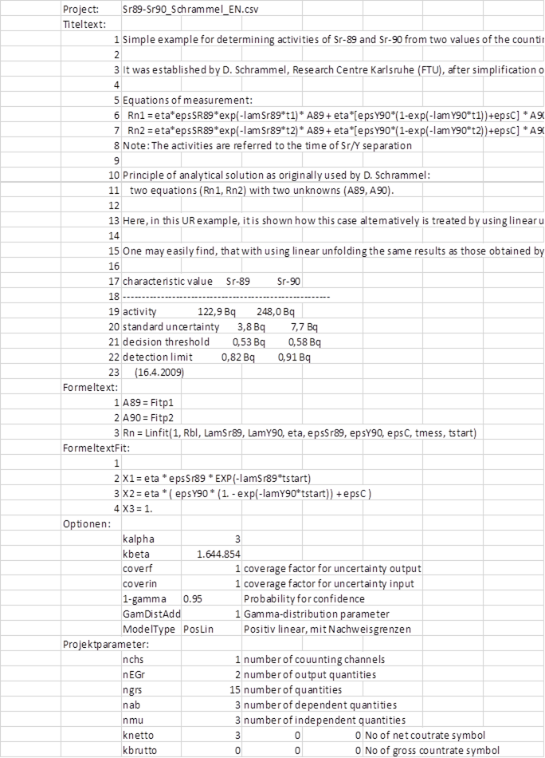
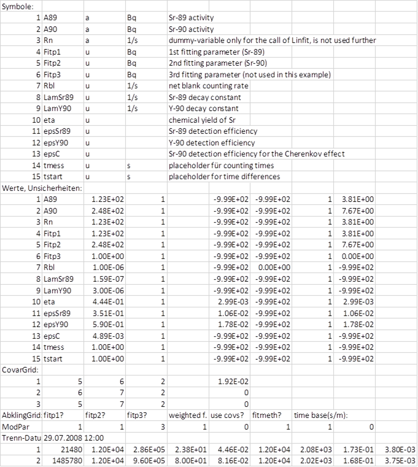

2.8. Structure of the project file¶
Knowing the structure of a project file is useful for a semi-automated usage of UncertRadio. For a regularly repeated Sr-89/Sr-90 analysis, e.g., with linear unfolding and a fixed scheme, one will probably be able to establish a basic version of that UncertRadio project file where some parts in it will (nearly) not change. Another part will change, however, from measurement to measurement. The latter data may e.g. be written directly into that file using a small Visual Basic program (MS Excel).
In addition to the existing version of a project file as .txp text file the structure of which is described below, a CSV file version was introduced in autumn 2013; the latter will be discussed at the end of this help topic.
2.8.1. Project file as text file in .TXP format¶
This may done by first copying the basic version of the project file to a working project file, also with extension .txp, e.g. to „Test2.txp“. Only when passing special keywords (those with preceding @, see below), those data from the actual measurement are written into that working file. After closing the working file one can call UR e.g. directly from a Visual Basic program such that UR is initially loading just this edited project file, by some command like „start uncertradio.exe Test2.txp“. Such as call can also be done like:
Uncertradio.exe Test2.txp
The table following below shows the simple structure of a project file (extension TXP).
Wichtig
Numbers always with . as decimal point (no comma!)!
2.8.2. Project file in the Excel-compatible .CSV format¶
The structure of the CSV format is similarly to that of the *.TXP format. It is also included in the preceding table describing the structure of the txp format. The following figure shows an example. @Sonstige from the txp format is found under Optionen.
Bemerkung
If one loads a TXP project file into UR and saves it in CSV format, one should not edit this CSV file with Excel and saves it again from within Excel. The reason is that Excel saves this CSV file by modifying the real numbers in it by reducing their numbers of decimals, which may lead then to slightly different results when loading this file again into UR. Such a manual editing of the CSV file should better be done by using a simple text editor such as Notepad.
As the automated usage of UR can be done via an Excel application, it could be confirmed that this problem does not occur when using the export to CSV from within Excel via an VBA code.
 2.8.3. Notes about the input of input quantity uncertainties¶
It is to be noted that uncertainties of input quantities can be entered in different fields. These are given in the following table, which corresponds to the TAB „Values, uncertainties“.
Using the *.TXP format of the project file, these fields are found under the section @Unc-Grid: described under the 6th to the 9th bullet; in the CSV format these are the columns 5 – 8 (E – H) under the section „Values, uncertainties“.
An uncertainty values must not be entered in column 10; dependent on the distribution types, it has to be entered in one of those columns given as the columns 6 to 9 in the following table.
column |
name |
type |
description |
|---|---|---|---|
6
|
StdDev
formula
|
text
field
|
formula of the standard deviation of the
quantity; no formula if (N+x) rule has been
selected;
(the internal coverage factor is always 1);
always „.“ has to used for the decimal point
|
7
|
StdDev
value
|
number
field
|
value of the uncertainty for normal
distribution;
if the (N+x) rule has been selected,
nothing shall be entered in these
cells!
(the internal coverage factor is always 1)
|
8
|
Half
width
|
number
field
|
Half width of rectangular/triangular
distribution
(the internal coverage factor is always 1)
|
9
|
abs./rel.
|
select
field
|
select whether the uncertainty from col. Sp.
6, 7 or 8
are to be taken absolute or as relative
value.
|
10
|
abs.
std.Unc.
|
number
field
|
(combined) absolute standard uncertainty
the columns 6, 7, 8 and 9;
Note: a value entered by the user will always
be over-written by the program!
|
If values are entered in columns 6 to 8 with a coverage factor unequal to 1, the parameter coverin within the same project file must be set equal to the coverage factor just applied. UncertRadio then converts all input uncertainties to the internal coverage factor 1; after the calculations, UncertRadio multiplies the output uncertainties with the value of the parameter coverf defined in the project file.